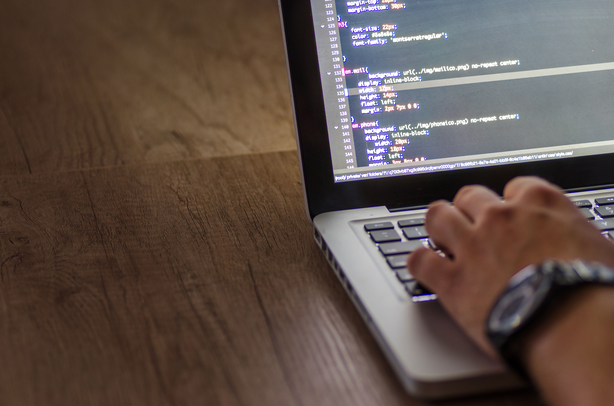

My First Semester Back at UWI
September 20, 2026 by Rheese-Ashley Roman
Starting my third year of Computer Science at UWI Mona has been both exciting
and a little overwhelming. Between algorithms, networking, and systems courses,
there is always something new to learn. I have been trying to keep up with lecture
material by taking detailed notes and working through practice questions early
instead of waiting until the week before exams.
One thing I have learned is how important it is to build small projects alongside
coursework. Labs like this one are a great way to practice HTML, CSS, and Git all
at once, and they force me to pay attention to details that are easy to overlook
when you are only reading about them in a textbook.
Why I Started Learning Web Development
September 10, 2026 by Rheese

Before university, I worked as a Junior Booth Operator for Booth Levels Jamaica, which taught me a lot about
working under pressure and paying close attention to detail. Those same skills have
carried over into how I approach coding, especially when it comes to debugging and
making sure every tag and bracket is exactly where it should be.
Web development appeals to me because you get to see the results of your work
immediately. Building this one page blog site has been a nice change of pace from
the more theoretical parts of my degree, and it has given me a better appreciation
for CSS Grid and Flexbox as layout tools.